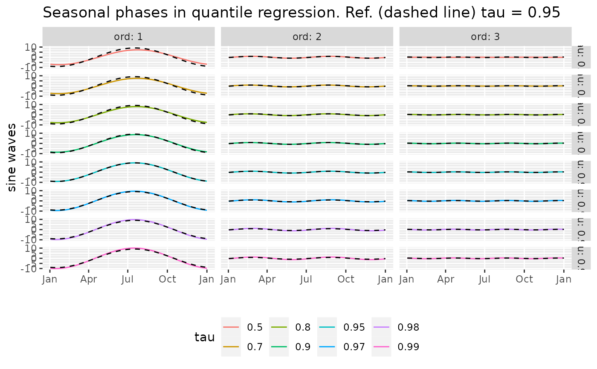

Phases of Sine Waves from the Trigonometric Coefficients
phases.RdFind the phases \(\phi_k\) and the amplitudes \(\gamma_k\)
for \(k = 1\), ..., \(K\) such that
$$
\alpha_ 0 + \sum_{k=1}^K \alpha_k \cos\{\omega_k t\} +
\beta_k \sin\{\omega_k t \}
= \textrm{Cst} + \sum_{k=1}^K \gamma_k \sin\{ \omega_k [t - \phi_k] \}
$$
where \(\omega_k = 2 \pi k /365.25\) and where the coefficients
\(\alpha_k\) and \(\beta_k\) are given in the object
vector.
Arguments
- object
A numeric vector or matrix having suitable names related to the trigonometric basis
tsDesign, or a numeric matrix having suitable colnames. This object will most often be given by applying thecoefmethod for the"rq"or the"rqTList"class, see Examples.
Value
An object with S3 class "phasesMatrix" inheriting
from "matrix". This matrix contains the phases
\(\phi_k\) as its rows. This matrix has as attribute
"amplitude" another numeric matrix with \(K\) rows,
containing the amplitudes \(\gamma_k\) as its rows. Some
methods are available for the class "phasesMatrix" such
as print and autoplot.
Caution
When a vector is given in object, it must
be named with suitable element names in order to allow a
reliable extraction of the coefficients \(\alpha_k\) and
\(\beta_k\). These correspond to the names
"cosj1", "cosj2", ... coefficients for the cosine terms \(\alpha_1\), \(\alpha_2\), ..., \(\alpha_K\)
"sinj1", "sinj2", ... coefficients for the sine terms \(\beta_1\), \(\beta_2\), ..., \(\beta_K\)
Some other named elements can be present e.g. for the constant or for trend terms: They will be ignored. Similarly when a numeric matrix of coefficients is given the colnames must be as before. The rownames will be re-used as rowanmes for the result.
Examples
Rq <- rqTList(dailyMet = Rennes)
co <- coef(Rq)
phases(co)
#> phi1 phi2 phi3 gamma1 gamma2 gamma3
#> tau=0.50 112 8.45 8.7 7.28 0.902 0.0712
#> tau=0.70 111 1.86 -19.0 7.52 0.851 0.1125
#> tau=0.80 110 1.46 -26.1 7.94 0.836 0.1816
#> tau=0.90 108 3.78 87.3 8.60 0.809 0.2733
#> tau=0.95 106 8.53 84.2 9.10 0.860 0.2651
#> tau=0.97 106 11.74 81.7 9.48 1.046 0.3743
#> tau=0.98 105 12.14 75.5 9.75 1.170 0.3664
#> tau=0.99 105 11.90 75.0 10.03 1.257 0.3670
## for a vector
phases(co[1 , ])
#> phi1 phi2 phi3 gamma1 gamma2 gamma3
#> [1,] 112 8.45 8.7 7.28 0.902 0.0712
## change the order: the result is the same
phases(co[1, sample(1:7, size = 7)])
#> phi1 phi2 phi3 gamma1 gamma2 gamma3
#> [1,] 112 8.45 8.7 7.28 0.902 0.0712
autoplot(phases(co))
